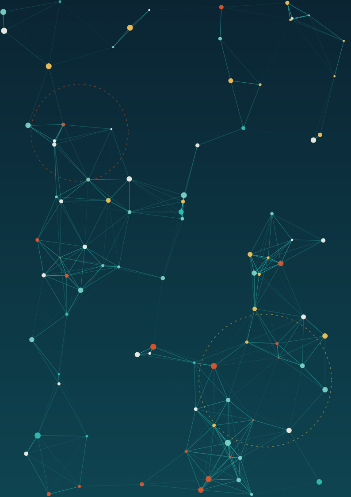
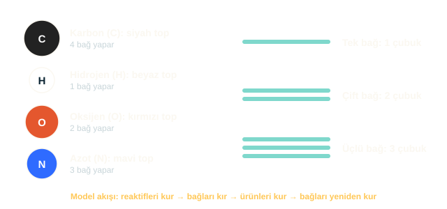

10. Sınıf · İnteraktif kimya
Kimyayı
elinde çevir.
Bir moleküle dokun. Atomların etrafında gezin. Görünmeyen dünyayı üç boyutta keşfet.
01 / Dokun, döndür, keşfet
3D molekül laboratuvarı
Bir molekül seç, parmağınla çevir. Yakınlaş, bağları aç ve atomların nasıl bir araya geldiğini gör.
Tarayıcınız WebGL desteklemediği için 3D model gösterilemiyor. Molekül şekilleri için dergi sayfa 5'e bakabilirsiniz.
Su
H2O
- Şekil
- Açısal (bükük)
- Bağ açısı
- 104,5°
- Polarlık
- Polar
- Bağlar
- 2 tek bağ (O–H); oksijende 2 ortaklanmamış elektron çifti
Kutuplu olduğu için tuz ve şeker gibi maddeleri iyi çözer.
Dergide oku: sayfa 6 →- C karbon
- H hidrojen
- O oksijen
- N azot
- ortaklanmamış çift
02 / Molekülün içine bir yolculuk
Bir atomun
etrafında gezin.
Çekirdeğe yaklaş, elektron katmanlarını incele. Bir elemente dokun; model ve tanecik sayıları birlikte değişsin.
3D görünüm açılamadı. Elementlerin tanecik sayılarını ve elektron dağılımlarını aşağıda inceleyebilirsin.
Yakından tanı
Oksijen
Oksijen-16 · nötr atomOksijenin son katmanında 6 elektron bulunur. Su molekülünde iki hidrojen atomuyla bağ kurar.
Şematik atom modeli: boyutlar ve uzaklıklar ölçekli değildir. Elektronlar gerçekte sabit dairesel yörüngelerde dolaşmaz.
03 / Bağlar değişir, atomlar kalır
3D tepkime: metanın yanması
CH4 + 2O2 → CO2 + 2H2O. Bağların kırılmasını, atomların yer değiştirmesini ve yeni bağların kurulmasını izleyin. Sahnedeki atom sayısı hiç değişmez.
Tarayıcınız WebGL desteklemediği için animasyon gösterilemiyor. Aynı tepkime dergi sayfa 7'de adım adım anlatılıyor.
| Atom | Reaktifler | Ürünler |
|---|---|---|
| C | 1 | 1 |
| H | 4 | 4 |
| O | 4 | 4 |
Atomlar yok olmaz, yalnızca yeniden düzenlenir; bu yüzden kütle korunur. Net enerji yaklaşık −802 kJ (ekzotermik). Hesap için dergi sayfa 7 ve 8'e bakın.
Molekül nedir?
Atomlar kimyasal bağlarla birleşince molekül oluşur. Dört temel kavram, dergideki her konunun temelini oluşturur.
Atom
Bir elementin en küçük birimi. Çekirdek (proton ve nötron) ile etrafındaki elektronlardan oluşur.
Kovalent bağ
Atomların elektron çiftlerini ortaklaşa kullanmasıyla oluşur. Örnek: H–H, C–H, O=O.
Molekül
En az iki atomun bağlanmasıyla oluşan tanecik. Örnek: su (H2O), metan (CH4), karbondioksit (CO2).
Tepkime
Bağların kırılıp yeni bağların kurulmasıyla gerçekleşen değişim. Kütle her zaman korunur.
1. performans ödevi
Kimyasal Tepkime Modellemesi
Ekip halinde günlük hayattan bir kimyasal tepkime seçin, moleküllerin bağlarını somut malzemelerle modelleyin ve sınıfa sunun. Yukarıdaki 3D animasyon, modelinizde göstermeniz gereken aşamaların bir örneğidir. Ayrıntılar ders kitabının ilgili sayfasında ve öğretmeninizin yönergesindedir.
- Tepkimeyi seçin ve denklemi denkleştirin.
- Atomları ve bağları modelleyin.
- Bağları kırıp yeni bağları kurarak tepkimeyi canlandırın.
- Enerjiyi ve kütlenin korunumunu yorumlayıp sunun.

Ödev hakkında sık sorulanlar
Öğrencilerin en çok sorduğu dört soru ve kısa yanıtları.
Hangi tepkimeyi seçmeliyim?
Bağ değişimini net gösterebileceğiniz, günlük hayattan bir tepkime seçin. Metanın yanması, sirke–karbonat tepkimesi ya da glikozun solunumu iyi başlangıçlardır. Seçtiğiniz tepkimenin dengeli denklemini ilk adımda yazın.
Hangi malzemeleri kullanabilirim?
Atomlar için renkli hamur, kil ya da toplar; bağlar için kürdan, çöp şiş veya pipet kullanabilirsiniz. Renk kodları için dergi sayfa 10'a bakın: karbon siyah, hidrojen beyaz, oksijen kırmızı, azot mavi.
Süre ve teslim şekli nasıl?
Ders kitabındaki özete göre çalışma 2 ders saatinde tamamlanır ve model ile kısa bir sunum (ya da poster) olarak teslim edilir. Kesin tarih ve format için öğretmeninizin yönergesi geçerlidir.
Puanlama neye göre yapılır?
İkincil kaynaklara göre tepkimenin tanımı, malzeme seçimi, süreç adımlarının izlenmesi ve modelin bilimsel uygunluğu ölçütlerle değerlendirilir. Ders kitabının eklerindeki form ve öğretmen kriterleri esas alınmalıdır.
Kavram sözlüğü
Dergide geçen temel terimler, kısa tanımlarla.
- Atom
- Bir elementin kimyasal özelliklerini taşıyan en küçük birim.
- Molekül
- En az iki atomun kimyasal bağlarla birleşmesiyle oluşan tanecik.
- Bileşik
- Farklı elementlerin belirli oranlarda birleşmesiyle oluşan madde.
- Kovalent bağ
- Atomların elektron çiftlerini ortaklaşa kullanmasıyla oluşan bağ.
- Lewis yapısı
- Değerlik elektronlarının noktalarla gösterildiği şematik çizim.
- Polarlık
- Bağ elektronlarının eşit paylaşılmamasından doğan yük ayrımı.
- Ekzotermik
- Enerji açığa çıkaran tepkime.
- Endotermik
- Enerji gerektiren (soğuran) tepkime.
- Aktivasyon enerjisi
- Tepkimenin başlaması için gereken minimum enerji.
- Kütle korunumu
- Kapalı sistemde tepkime öncesi ve sonrası toplam kütlenin eşit olması.
Mini quiz
Dergiyi okudunuz mu? Üç soruyla kendinizi test edin.